Custom Tattoos · Downtown Burlington
True Grit Tattoos
Custom tattooing in any and all styles, from bio-mechanical and portraits to bold traditional, plus cover-ups. Free consultations, private rooms and a studio that takes sterilization seriously.
#8-480 Brant St, Burlington · 18+ with photo ID
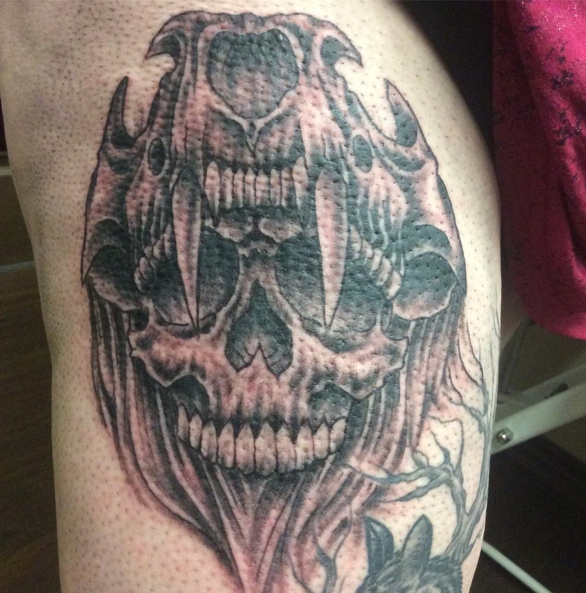
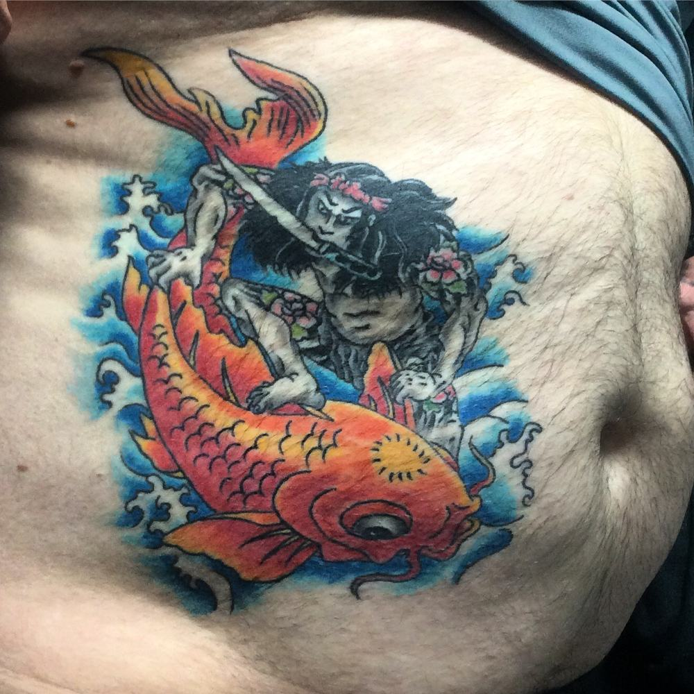
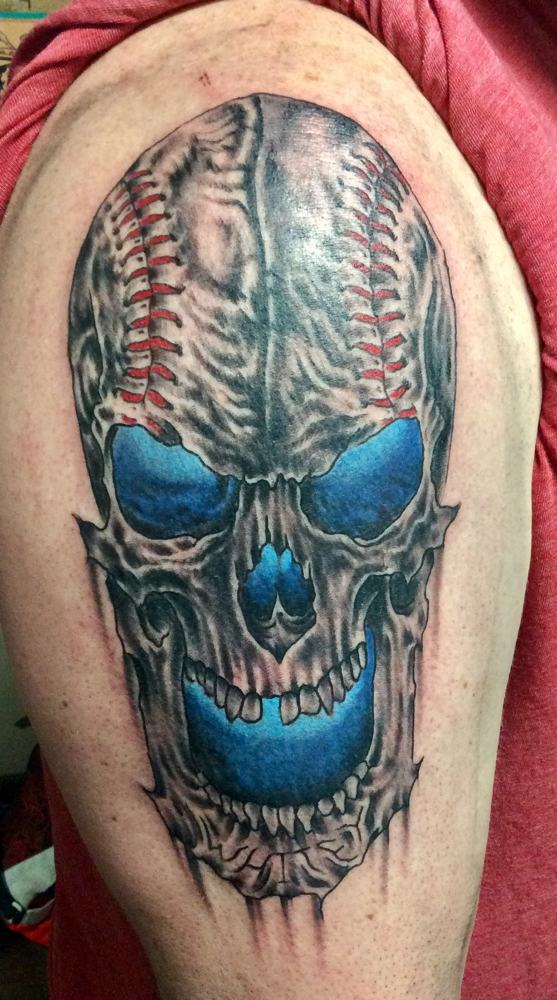
- Free consultations
- Cover-ups welcome
- Private tattoo rooms
- Single-use disposable equipment
- Spore-tested autoclave
- Free touch-ups for 6 months
- 18+ with photo ID
The portfolio
Fresh Ink
Real work, straight from the chair. Photos are unedited. Tap any piece to see it up close.
See more on Instagram: @truegrittattoos
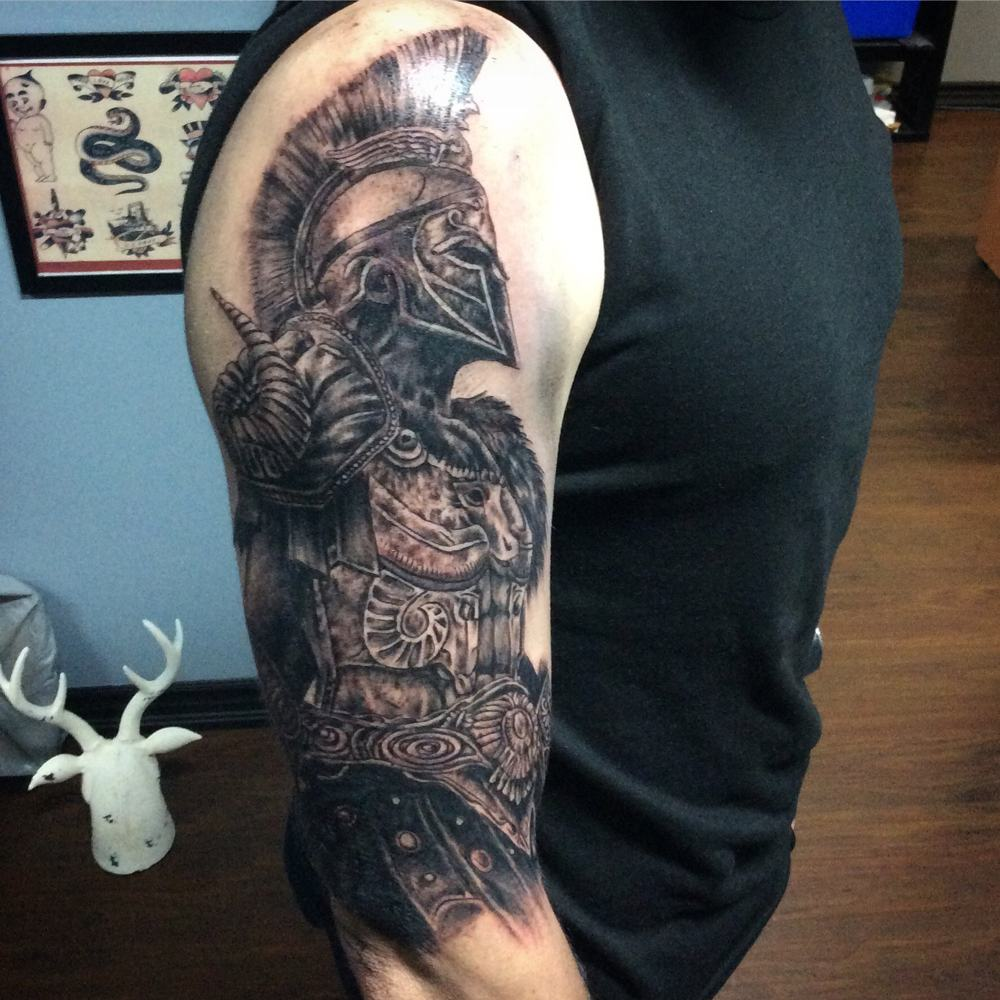
Resident tattooer
Greg Garratt
Greg studied illustration at Sheridan College, graduating in 1992, and worked across many mediums before realizing tattooing would be his life-long one. He started tattooing in 2001 after an apprenticeship at Dansing Dragon, moved on to Way Cool Oakville in 2003, and later joined the True Grit team.
- Bio-mechanical
- Traditional
- Portraits
- Cover-ups
- In the chair
- Thursday to Monday, 12 pm to 8 pm
- Rate
- $140/hr + tax for larger pieces; small single sittings are flat-rated
- Reach Greg
- garratt.greg@gmail.com · @greggarratt
Beyond the skin
Greg's original paintings: skulls, coffins and horror icons, many painted on salvaged wood.
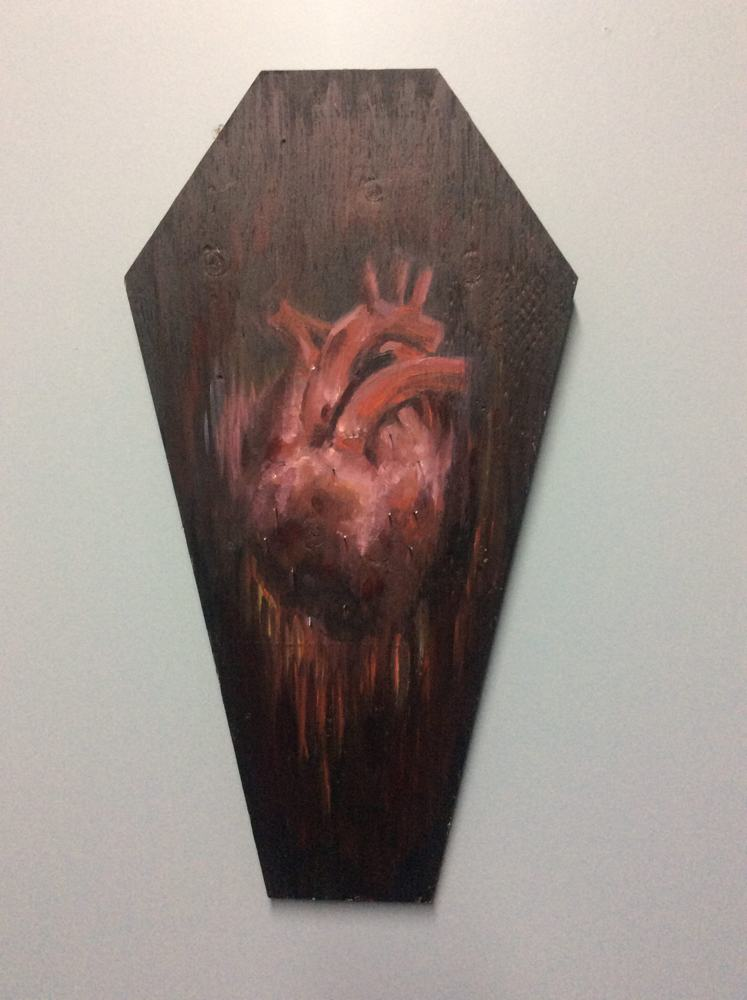
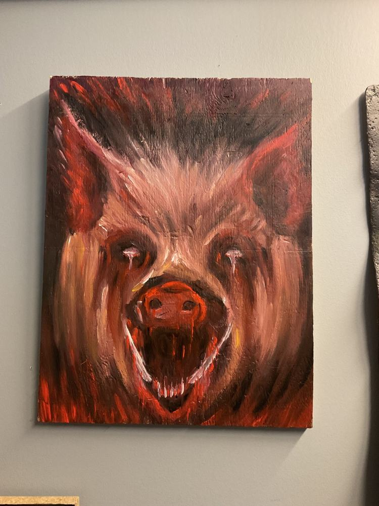
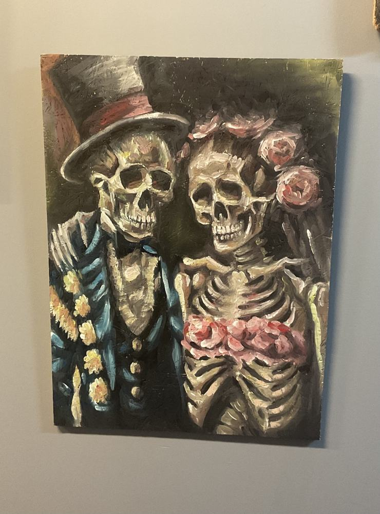
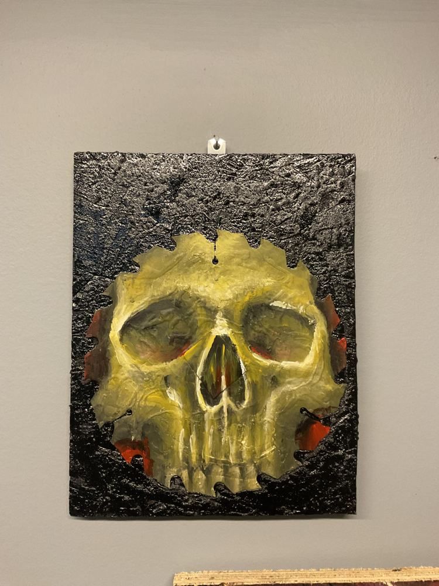
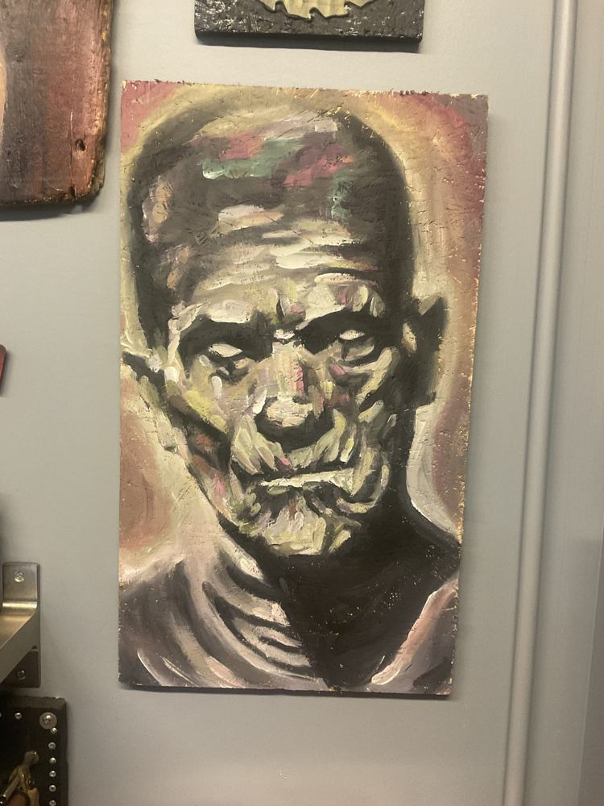
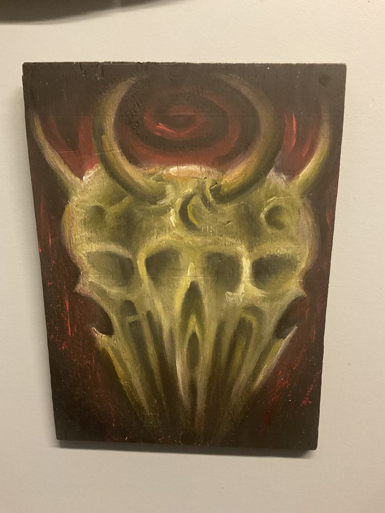
The shop
Tucked Away on Brant
We're neatly tucked away at #8-480 Brant St, right across from Smith's Funeral Home, in the plaza with the Alex Restaurant and Burrito Masters. Just walk down the pathway and you'll find us.
- Friendly atmosphere. We welcome any and all people
- A private tattoo room and a semi-private room
- Knowledgeable staff, trained in blood-borne pathogens and infection control
- Sterile set-up with single-use, disposable equipment
- Top-of-the-line hard surface disinfectants for every procedure
- Public parking close to the shop
- Tattooing only, no piercing (sorry!)
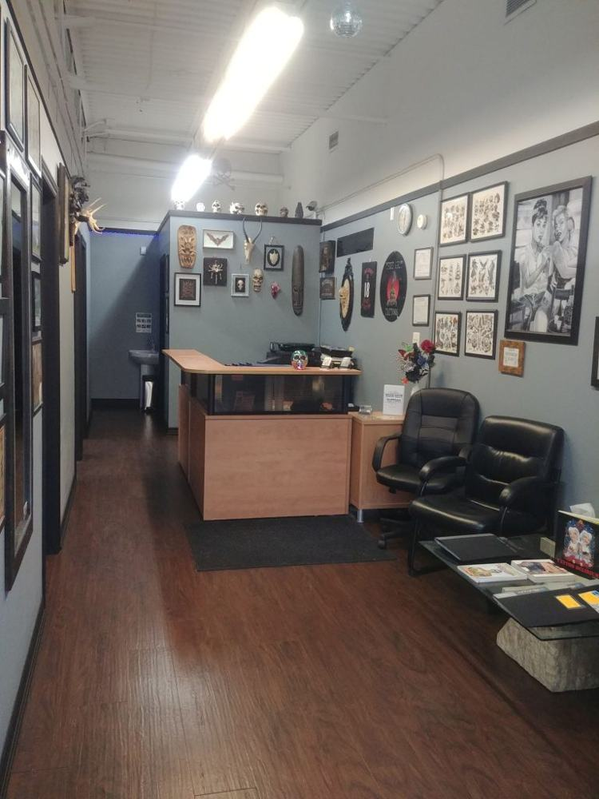
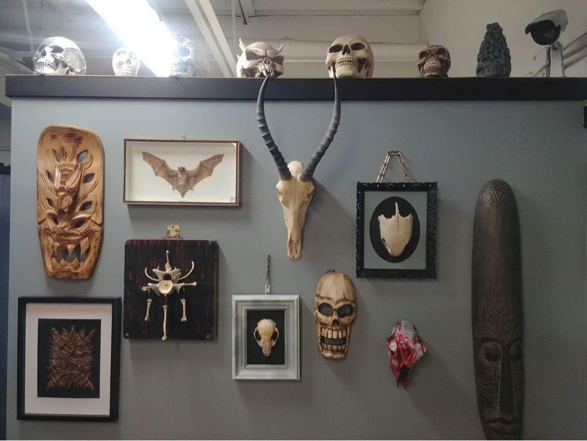
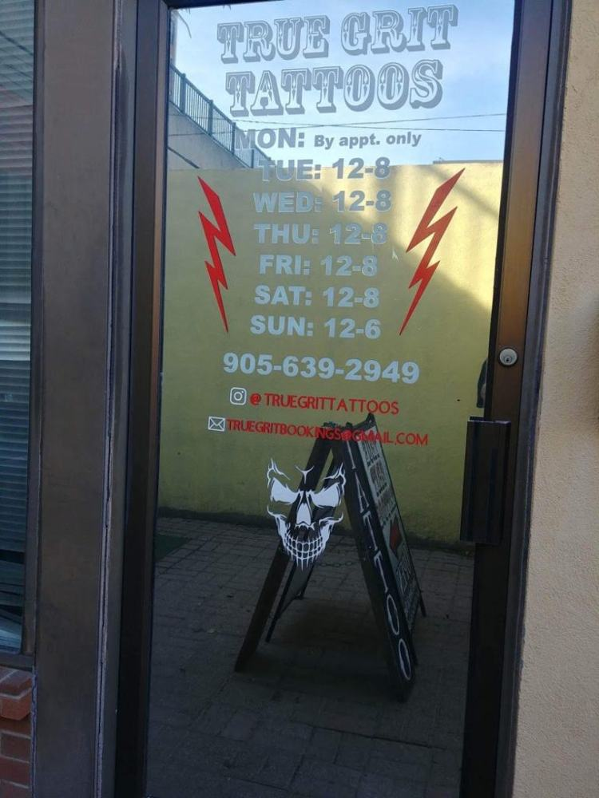
Booking
Start Your Piece
- Free consultation. Call the shop or email us to sit down with the artist and plan your design. Bring lots of reference: there are 20 ways to draw a rose.
- Lock in your date. A $40 deposit secures the first hour, plus $20 for each additional hour booked (a 4-hour session is $100). It covers your custom drawing and comes off the final price.
- Show up ready. Eat a good meal, arrive on time, clean, sober and freshly showered, with government photo ID.
Deposits are non-refundable. Cancel or reschedule at least 48 hours ahead or the deposit is lost. Walk-ins on announced dates.
Heal it right
Aftercare
1. Leave the bandage on 12 to 24 hours
Don't lift the tape to peek; it lets bacteria inside, and the tape usually won't stick again once peeled.
2. Wash it thoroughly
Use mild soap and water. Lather up your hands and rinse, then re-lather and gently wipe away the goo that has built up on your fresh tattoo. Don't be alarmed, it will look messy at first! Wipe firmly with paper towels, let it dry and check it under a good light. If it's shiny, wash again. Proper cleaning is essential for a fast heal.
3. Moisturize after 48 hours
After the first wash, wait 48 hours before applying a mild, unscented moisturizer. We always recommend Aveeno. Apply 2 times a day max.
4. Keep it out of the water
NO swimming, NO baths, and NO hot tubs or saunas until healed. Getting a tattoo excessively wet increases healing time by raising the risk of thick scabbing. Showering is fine; just pat it dry right away.
5. Don't pick or scratch
It will get flaky and itchy, and that's normal. Slapping the tattoo or applying moisturizer can relieve the itch. Let the flakes fall off on their own; picking can lift out pigment.
6. Sun and clothing
Keep your tattoo out of the sun for the rest of its life. You can't put sunscreen on a fresh tattoo; wait about 3 weeks. Avoid tight clothing over a healing tattoo, since rubbing and chafing cause scabbing and slow healing.
Good to know
FAQ
How old do I have to be?
18 with photo ID, no exceptions. For hand, face and neck tattoos you must be 21+ with visible tattoos. We accept government-issued ID: driver's licence, health card, Age of Majority card or passport.
Do you guarantee your work?
Yes! All tattoos are guaranteed, with free touch-ups for up to 6 months after the first appointment, as long as aftercare instructions were followed and the tattoo wasn't picked at or tampered with while healing. Free touch-ups don't apply to hands, neck, feet or face because of how quickly that skin regenerates.
Can I just walk in?
Because our artists are so busy, appointments come first. Walk-ins happen on announced dates, or when there's a last-minute cancellation and your design doesn't need much alteration. Call or drop by to check.
Are deposits refundable?
No. Artists spend time communicating with you, drawing and researching your piece, and need to be compensated for it. Please be certain of your commitment.
I've come down with a cold. Now what?
Call the studio to reschedule. Getting tattooed while sick asks too much of your immune system.
Can I drink before my appointment?
Absolutely not. Alcohol thins your blood, so you bleed more and push out ink. We won't tattoo anyone who is intoxicated.
Are you regulated?
Tattoo studios are overseen by the health board for sterilization and disinfection, and we far surpass those rules. There's no licence for tattoo artists in Canada, so do your research. All of our artists are trained in blood-borne pathogens and infection control and follow aseptic technique.
What's spore testing, and why should I ask?
A spore test checks that the autoclave (the sterilizer) actually works. Live spores go through a normal cycle, then an independent lab incubates them for 48 hours to confirm they were all killed. Ontario studios must test at least twice a month. Wherever you get tattooed, ask to see the results, and check that the sterilizer's model and serial number match the report. Ask us any time to see ours.
Come by
Visit the Shop
True Grit Tattoos480 Brant Street, Unit #8
Burlington, Ontario L7R 2G8
Driving south on Brant St, pass Caroline St and we're on the right, directly across from Smith's Funeral Home. See you soon!
Hours
- Monday to Friday
- 12 pm to 8 pm
- Saturday & Sunday
- 12 pm to 6 pm
- Phone & email
- Tuesday to Saturday, 12 pm to 6 pm
- Walk-ins
- On announced dates
Contact
- Phone: 905-639-2949
- truegritbookings@gmail.com
- Instagram @truegrittattoos
- Fax: 905-639-6229